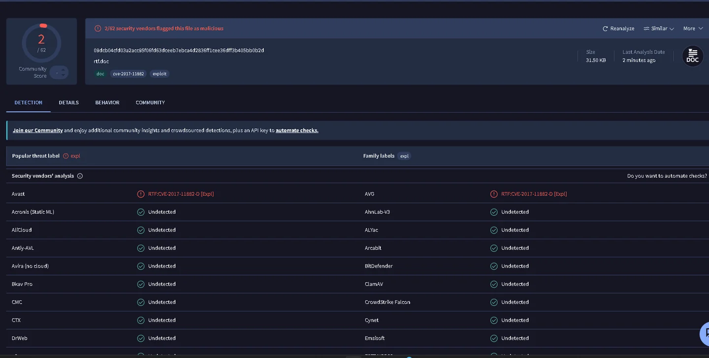
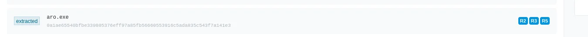
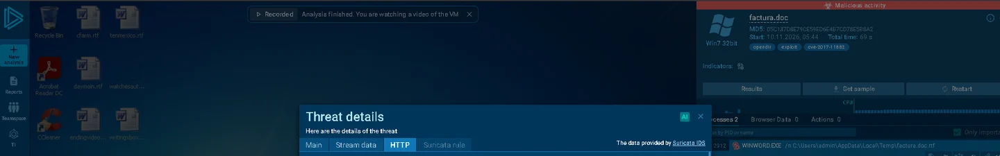
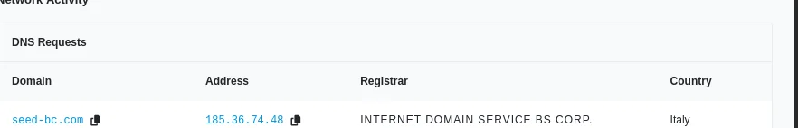

Malicious Doc
- Categoria
- Desafios
- Caso
- DOC-01
- Registro
- Análise estática
Resumo
Análise de um documento suspeito recebido em um cenário simulado de fraude por e-mail.
IOCs
| Tipo | Valor | Observação |
|---|---|---|
| CVE | CVE-2017-11882 | Exploit em documento RTF. |
| Arquivo | jan2.exe | Executável observado no tráfego HTTP. |
Passo a passo da investigação
Análise de documento malicioso
Arquivo analisado
- Arquivo:
/root/Desktop/ChallengeFiles/factura.zipO arquivo foi aberto e verificamos que seu conteúdo estava no formato RTF (Rich Text Format).
Análise
Consultamos o arquivo no VirusTotal, que indicou que se tratava de um arquivo malicioso associado à vulnerabilidade CVE-2017-11882.

Em seguida, analisamos o arquivo no Hybrid Analysis e verificamos os dados necessários para responder às perguntas do desafio.
Respostas do desafio
What is the relevant Exploit CVE code obtained as a result of the analysis? CVE-2017-11882 What is the exe name it drops to disk after it runs?

What is the name of the malicious software downloaded from the internet as a result of the file running?

What type of exploit is running as a result of the relevant
file running on the victim machine? RTF.EXPLOIT
What is the IP address and port information it communicates
with?

Tráfego de rede
No ANY.RUN, submetemos o hash SHA do arquivo e analisamos a aba
Network. No tráfego HTTP, identificamos o arquivo
jan2.exe, que era o arquivo executado.
Lições aprendidas
- Usar mais de uma sandbox (Hybrid Analysis e ANY.RUN) para confirmar comportamento.
Exercício simulado. Algumas capturas foram recortadas ou tiveram campos ocultados.